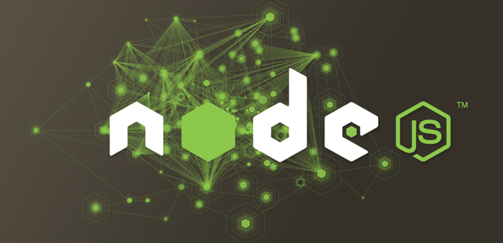
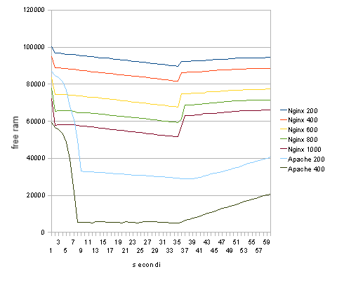
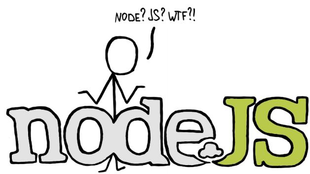
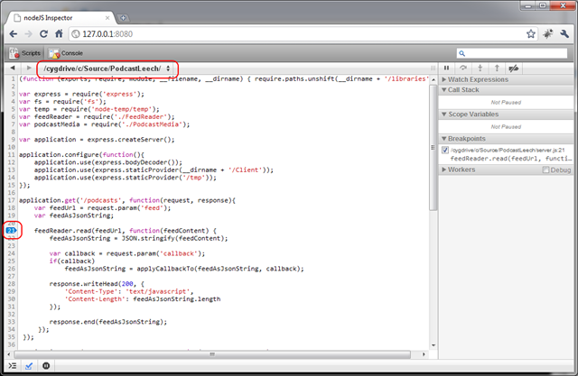

Hello node.js !
di Maurizio Lupo
@sithmel

The C Programming Language
Brian Kernighan and Dennis Ritchie - 1978
Hello world?
Che cosa è Node.js?
Node.js è una piattaforma per la creazione di applicazioni di rete (e non solo) veloci e scalabili basata sulla virtual machine Javascript di Chrome (V8)
Perchè usare Node.js?
Parliamo di concorrenza
Anzi parliamo di cucina
Anzi tutte e due!!!
Che cosa è la concorrenza?
Meglio evitare questa situazione
Soluzione classica (fork, threads)
Aumentare il numero di cuochi
Problema
E' inefficiente
Esempio
(in pseudolinguaggio)
function getProfile(request){
formdata = extract(request);
ldapdata = getLDAPData(formdata);
data = queryDatabase(ldapdata);
view = Template('profile.html');
return view.render(data);
}
Ordini di grandezza
- Cache L1: 3 cicli
- Cache L2: 14 cicli
- RAM: 250 cicli
- Disco: 41.000.000 cicli
- Rete: 240.000.000 cicli
Esempio
(in pseudolinguaggio)
function getProfile(request){
formdata = extract(request); // RAM
ldapdata = getLDAPData(formdata); // I/O rete
data = queryDatabase(ldapdata); // I/O rete
view = Template('profile.html'); // I/O disco
return view.render(data);
}
Ci vuole una soluzione!
Eccola: il modello ad eventi
L'esempio di prima
function getProfile(request){
formdata = extract(request);
ldapdata = getLDAPData(formdata);
data = queryDatabase(ldapdata);
view = Template('profile.html');
return view.render(data);
} diventa
function getProfile(request, response){
formdata = extract(request);
getLDAPData(formdata, function (ldapdata){
queryDatabase(ldapdata, function (data){
Template('profile.html', function (view){
response(view.render());
});
});
});
} Stiamo per creare una nuova ondata di talenti. Siamo il Manchester United delle cucine ora. Se lavoro tutto il tempo in cucina? Io sono il coach!
Test sul campo: Apache vs Nginx
Perchè Javascript?
Ecco perchè!
- Gli sviluppatori Javascript "pensano" ad eventi
- Runtime perfezionati e performanti (V8)
- Un solo linguaggio per il client ed il server
- Un solo linguaggio da imparare
- Librerie condivise tra client e server
Javascript Love
Javascript ieri: un linguaggio incompreso
- Lisp travestito da C (e con Java nel nome !)
- Alcune funzionalità inusuali (prototypes)
- Lunga storia di incompatibilità
- Alcuni errori di design
- Molta pessima documentazione in giro
Poi ... un bel giorno
Javascript: oggi
- Si trova anche ottima documentazione
- Standard ECMA (Ecmascript 5.1, versione 6 in via di sviluppo)
- Il linguaggio più diffuso del mondo
- Una grandissima comunità di sviluppatori
- Ci scommettono grandi aziende: Mozilla, Google, Microsoft, Apple ecc.
Torniamo a node.js
Disponibile su *nix/windows
Meglio usare i sorgenti (o NVM):
sudo apt-get install build-essentials python
./configure
make
sudo make install
Hello Node.js (1)
app.js
console.log("Hello Node.js!");
node app.js
Hello Node.js!
Hello Node.js (2)
app.js
var http = require('http');
// Configuro il server HTTP
var server = http.createServer(function (request, response) {
response.writeHead(200, {"Content-Type": "text/plain"});
response.end("Hello Node!\n");
});
// Ascolto sulla porta 8000
server.listen(8000);
// Segnalo che sono pronto
console.log("Server attivo su http://127.0.0.1:8000/");
Node.js: la libreria core
Sistema a moduli
var http = require('http');
Server di rete
var server = http.createServer(...
Node.js: la libreria core (2)
Accesso al file system
var fs = require('fs');
fs.readFile('/etc/passwd', function (err, data) {
if (err) throw err;
console.log(data);
});
Vai su: http://nodejs.org/api/
NPN
Node.js Package Manager
$ npm install pacchetto
$ npm install -g pacchetto
Repository moduli su: https://npmjs.org/
Include un sistema di installazione da sorgenti, pubblicazione, risoluzione dipendenze.
Alcuni strumenti utili
- NVM (node version manager)
- hotnode
- node-inspector

Librerie interessanti
- Connect (sistema di middleware per HTTP)
- socketIO (gestisce trasparentemente websocket, flashsocket, comet ecc.)
- Everyauth o passport (per autenticazione)
- node-mysql, node_redis, node-mongodb-native (database)
Framework più famoso
express.js
Demo Time !
Bibliografia
- Node.js up and running (O'Reilly)
- Smashing Node.js (Smashing Magazine)
- Node.js cookbook (Packt)
Grazie
seguimi su twitter @sithmel
Copyright immagini
- http://www.flickr.com/photos/54397539@N06/5034955576/
- http://www.flickr.com/photos/54397539@N06/5034954264/
- http://www.flickr.com/photos/54397539@N06/5034955830/
- http://www.flickr.com/photos/54397539@N06/5034334541/
- http://www.flickr.com/photos/54397539@N06/5034954460/
- http://www.flickr.com/photos/41061319@N00/262930612/